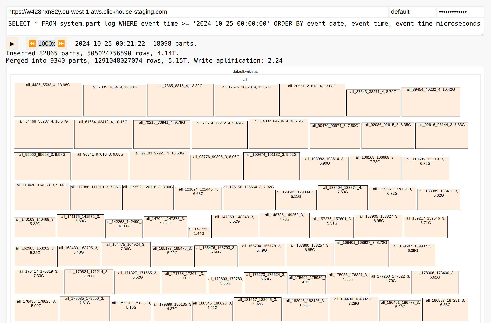
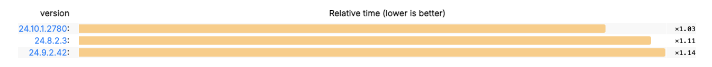
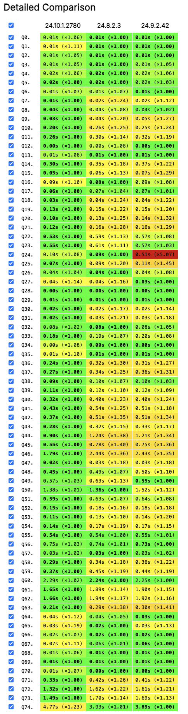

Did you know about the problem of "xid overflow" in ZooKeeper?
Did you know about the problem of "zxid overflow" at least?
Ok, never mind.
ClickHouse Keeper does not have these problems, and it works perfectly!
Developer: Antonio Andelic.
Performance Improvements
Optimization For Background Merges
We have to optimize merges on a cluster with a very high ingestion rate (400 million records per second) and a medium number of machines (30) where all of them are replicas, concurrently assigning merges on a shared storage...
How to do it?
— First we have to visualize it!

Optimization For Background Merges
The visualization is available at the builtin /merges handler
of the HTTP interface, similarly to /play, /dashboard, and /binary.
Developer: Alexey Milovidov.
Optimization For Parquet
ClickHouse 24.10 supports filtering by bloom filters in parquet files.
Caveats: most tools cannot write bloom filters,
and even in Spark it takes efforts to enable them.
Developer: Arthur Passos.
pointInPolygon Uses Indices
Geospatial queries will be speed up if you have a minmax index on lat, lon,
or an index by mortonEncode(lat, lon) or hilbertEncode(lat, lon).
Developer: Jacky Woo.

10..30% improvement across a wide range of queries.

Something Interesting
Wildcard Grants
This was already possible:
GRANT SELECT ON db.* TO user1;
GRANT SELECT ON *.* TO user2;
New in 24.10:
GRANT SELECT ON db.table_pefix_* TO user1;
GRANT SELECT ON db*.table TO user2;
Wildcards work for databases and tables.
They can be put at the end of designate a prefix of database or table names.
You can revoke with a different wildcard than what was granted.
Developer: Pufit.
Real Time Metrics In The Client
What happens inside your query right now?
Demo
Developer: Maria Khristenko, Julia Kartseva.
Table Cloning
CREATE TABLE hits2 ENGINE = MergeTree CLONE AS hits
Quick forking (branching) a table without copying its data.
Identical to creating an empty table and attaching all partitions from the source.
Demo
Developer: Tuan Pach.
Caching Of Remote Files
If you have a MergeTree table on an S3-backed disk,
we already provide a feature of local filesystem cache.
The new feature in 24.10 is caching of directly accessed files and data lake tables on S3 and Azure.
23.12 — the first version with experimental feature.
24.9 — support for the APPEND clause.
24.10 — support for the Replicated database engine.
In version 24.10, Refreshable Materialized Views are production ready!
Demo
Developer: Michael Kolupaev.
Parallel Replicas
Introduced in version 21.12.
In version 24.10, parallel replicas are in beta!
Demo
Developer: Igor Nikonov, Nikita Mikhailov, ...
JSON Data Type 🧪
Introduced in version 24.8. Curently still in the experimental stage.
CREATE TABLE website_traffic
(
time DateTime DEFAULT now(),
data JSON
)
ORDER BY time
Developer: Pavel Kruglov
JSON Data Type 🧪
SELECT data.cf.country, count() AS c,
uniq(data.headers.`cf-connecting-ip`) AS u
FROM website_traffic
WHERE data.headers.host = 'packages.clickhouse.com'
AND match(data.url::String, 'clickhouse.+\.(deb|rpm|apk|tgz)$')
GROUP BY 1 ORDER BY u DESC LIMIT 100
Automatic application of functions for Variant and Dynamic types in 24.10:
SELECT data.cf.country, count() AS c,
uniq(data.headers.`cf-connecting-ip`) AS u
FROM website_traffic
WHERE data.headers.host = 'packages.clickhouse.com'
AND match(data.url, 'clickhouse.+\.(deb|rpm|apk|tgz)$')
GROUP BY 1 ORDER BY u DESC LIMIT 100
Developer: Pavel Kruglov
Guest Talk
Bonus
Integrations
ClickHouse ODBC driver is built as a self-contained library
(no dependencies, no symbol conflicts).
Fixed an error with conflicting session_id.
Improvements for Java, Python, Go, JavaScript, and Rust drivers
with performance improvements and support for new data types.
Updates for Metabase integration and Apache Beam.
Thanks for many updates to our contributors:
Am-phi, dizider, javiercj93, (Java), earwin, EpicStep (Go), ardabeyazoglu (JS)
— JSON data type under the hood;
— ClickHouse + Supabase;
— Single-page applications with ClickHouse;
— Cleaning the MTA data for NYC;
— ClickHouse for Ad-Tech;
— ClickHouse for Security;
— ClickHouse for Blockchain;
— Migration from Rockset;